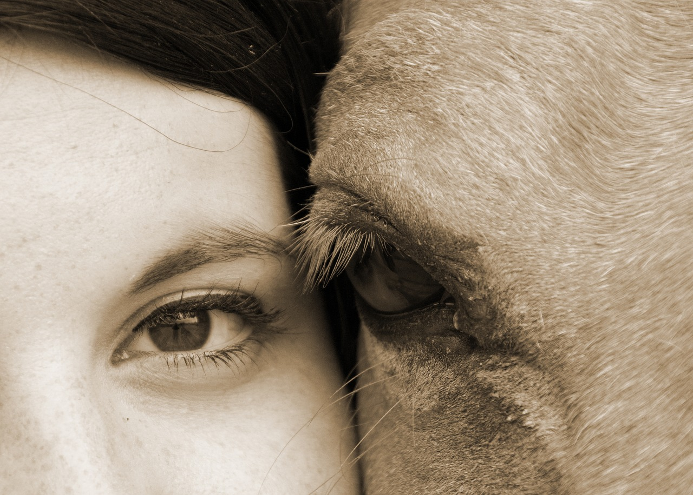

Services
Liberty Reins, LLC offers a variety of equestrian-related services. Our most common services are listed below. If you seek something that is not listed, please send us a message and ask. We like to think outside the box and create experiences that are as unique and special as the clients themselves.
Horseback Riding Lessons
Horseback riding lessons are a great way to develop so much more than riding skills. Liberty Reins owner, Allison, is a former 15-year school teacher and brings her experience from the classroom into the arena. She has a lifetime of horse experience to share with all of her students and is certified as an Equine Specialist through a global organization called EAGALA.
We strive to have each student have an experience that is very unique to him/her and their individual needs and goals. Careful thought is put into helping each rider progress in their riding skills but also in other areas such as confidence, assertiveness, independence, and leadership. Most people that have spent time with horses will testify to their ability to help us grown in ways that were never part of the original goal.
Lessons will include all aspects of riding from gathering the horse to putting the horse away and all steps in between. The ultimate goal is for the student to gain independence in the skills necessary to safely handle and ride any horse, not just the lesson horse they use.
Equine-Assisted Psychotherapy (EAP)*
Equine-Assisted Learning (EAL)*
Both equine-assisted psychotherapy (EAP) and equine-assisted learning incorporate horses experientially for emotional growth and learning. The main difference is that:
Horses are so powerful in EAP because they are social animals and provide vast opportunities for metaphorical learning. Horses are sensitive to non-verbal communication and respond to the messages given to them in the moment. Consequently, the horse's responses feel very familiar to them, namely just like how relationships, fears, dreams, addictions, etc. play out in their lives.
The horses allow for the opportunity to work through how to change aspects of their lives in an experiential, in-the-moment and emotionally safe method.
The horse's responses give the client and treatment team information - information that brings awareness of current patterns and motivates change to new ones. The lesson to be learned is that if they change themselves, the horses (and others in their lives) respond differently.
Please contact us if you are interested in booking and EAP session. There are may variables and details to work out and will need to be discussed.
*Allison Girmai is EAGALA certified as an Equine Specialist to conduct EAP and EAL sessions. All session will be conducted with a certified mental health professional present at all times.